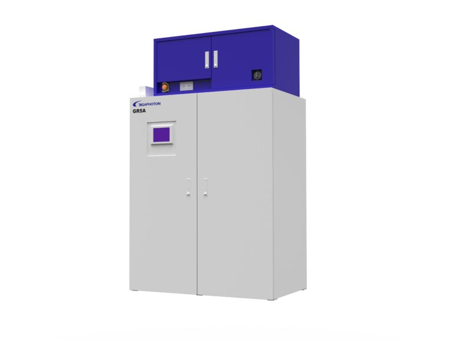
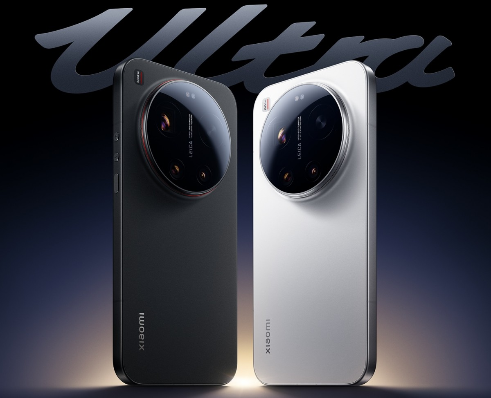
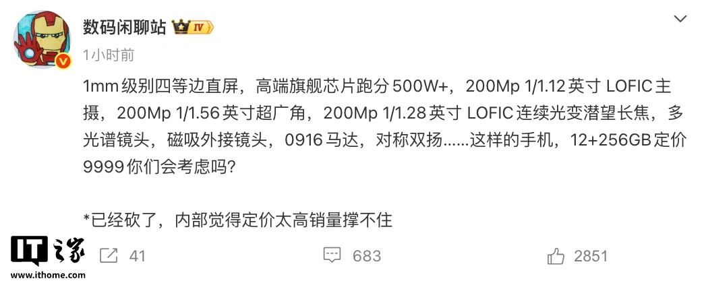
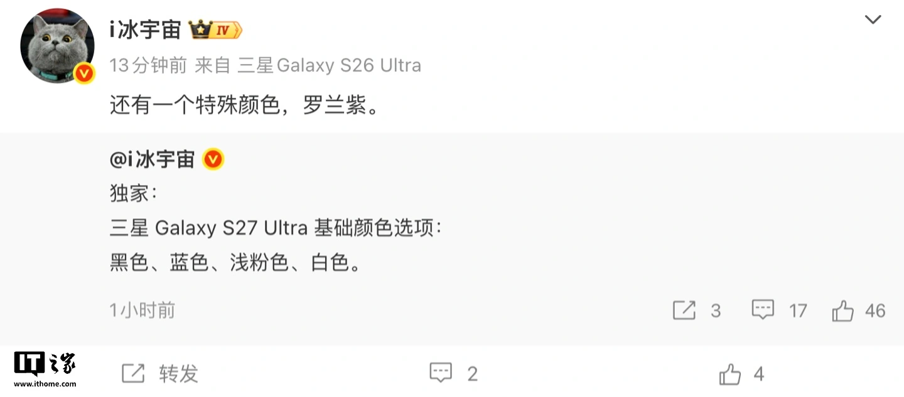
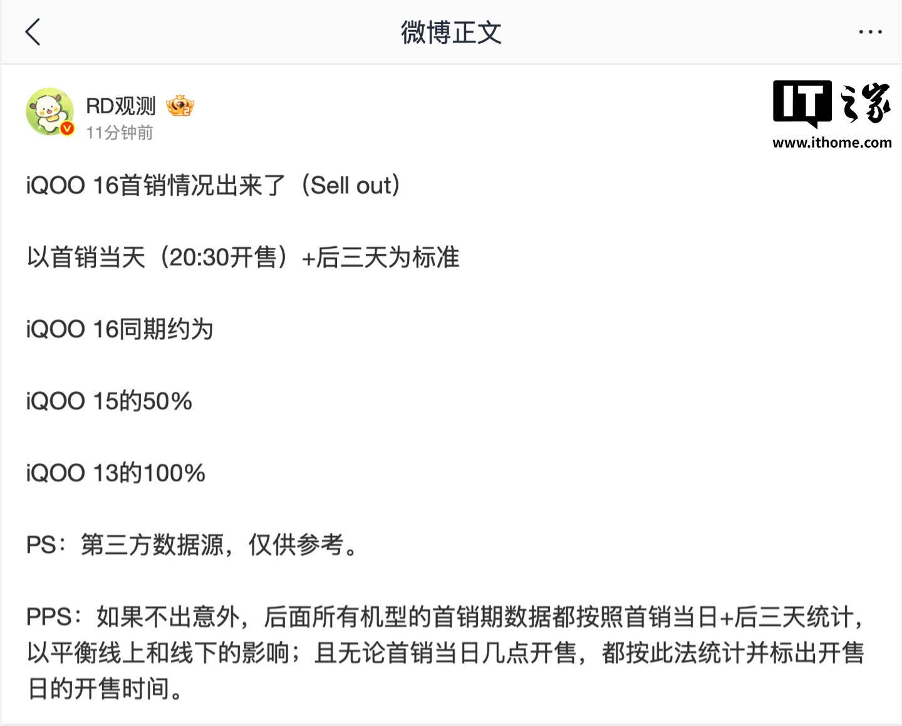

THE TECH EDIT
기술의 변화, 매일 한눈에.
카메라 · 스마트폰 · AI, 해외 테크 소식을 모아 전합니다.
최근 발행2026-10-07
새로 들어온 소식
LATEST STORIES
최신 뉴스
전체 3,500개 기사
시그마 50-120mm F2.8 APS-C 카메라 렌즈 유출: 광학 손떨림 보정 지원, Sony E, Fujifilm X, Canon RF 마운트 커버

르네사스, AI 데이터센터 및 휴머노이드 로봇용 저전압 GaN 전력 반도체 첫 출시

레드매직 12 Pro+ 스마트폰 신제품 예약 시작, 10월 15일 출시

OPPO, F35 5G 시리즈 스마트폰 출시: 8000mAh 배터리, Dimensity 6360 Max/7360 Max 칩 탑재

iPhone이 순식간에 '카메라'로 변신, ShiftCam과 Apple이 협력하여 새로운 ProRig 세트 출시

Huawei 위청둥, 메모리 압박 언급: 스마트폰 한 대당 200달러 비용 증가, 회사 생존 위해 가격 인상 불가피

Google Pixel 12 시리즈 스마트폰 공개: 폴드 폴더블 내부 디스플레이 해상도 2296x2404로 향상

일본 반도체 리소그래피 장비 제조업체 Gigaphoton, 신형 네온 가스 회수 시스템 hTGM 출시… 회수율 50% 달성
갤럭시 S27 울트라, 배터리 커져도 S26 울트라보다 빠르게 충전될 전망; AI로 렌즈 플레어 보정
Apple, iPhone Duo 앱 제출 허용, 내년 4월부터 폴더블 기기 스크린샷 제공 필수

Apple 최초의 폴더블 iPhone Duo 잠금 화면, 원클릭 활성화 지원하는 미니멀리스트 집중 모드 탑재 예정
tvOS 27.2 코드, Apple TV 4K(4세대) Siri AI 및 Apple Intelligence 지원 시사

취소된 샤오미 18 울트라 사양 유출: 2억 화소 카메라 3개 탑재

Xiaomi 18 Ultra로 예상되는 2억 화소 트리플 카메라 플래그십 스마트폰 개발 취소
vivo Y600k Turbo 스마트폰 출시: 4세대 스냅드래곤 7s, 12GB+256GB 모델 2799위안
또 인상! TSMC 첨단 웨이퍼 가격 2027년 1분기 6~8% 추가 인상 계획 소식
Sony, Meta에 XR 특허 419건 양도... 관련 하드웨어 사업 축소 가능성

Samsung W27 심계천하 폴더블 디스플레이 스마트폰 발표회 10월 29일 개최 예정, 오프라인 사전 예약 시작

Samsung Galaxy S27 Ultra, '롤랜드 퍼플' 특별 색상으로 출시 예정, 공식 웹사이트 전용 색상으로 제공될 듯

난야 테크놀로지, 웨이퍼 레벨 패키징 사업 확장 위해 핑둥 과학단지에 공장 투자 및 설립 예정

iQOO 16 스마트폰 첫 판매량 공개: iQOO 15의 약 50%, iQOO 13의 100% 수준
검색 결과가 없습니다
다른 검색어를 입력하거나 필터를 초기화해 보세요.